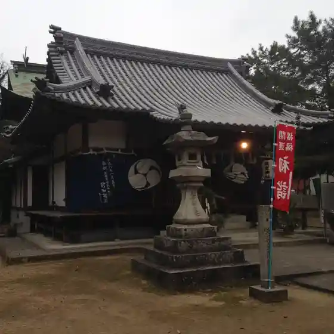
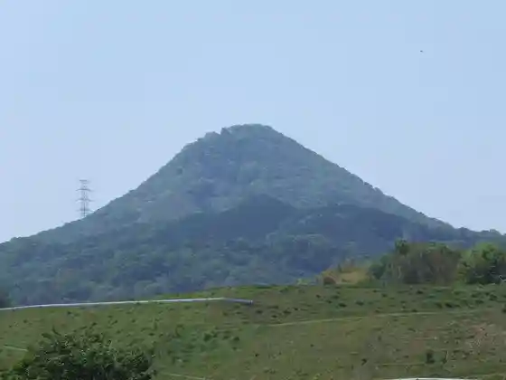
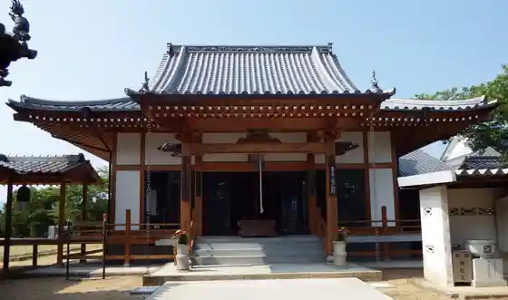

Ayagawa, Kagawa
Ayagawa · Kagawa
Ayagawa
Highlighted on the Kagawa map.

Stay
Maunten Domu
Precious Hotel Ayagawa
Dining
Taishu Sakaba Tsubame
Momiji Onsen
Akichan
Bi San Ono
Dagashi Yume Ya Ionmoru Ayagawa Mise
Kentakkiifuraidochikin Ionmoru Ayagawa Mise
Kyo Shoku Ie Hakuo
Sanukiudon no Eki Ayagawa
Yaki Buta P
Himawari sun Ore no Shokudo
Sakura no Kai
Ai Land Shokuhin
Unagi no Heso Tatsunomiya Mise
Kokko Hausu Ayagawa
Yama Chan
Teuchi Udon Tamura
Experience
Roadside Station Tatsunomiya
Sights
Tatsunomiya Tenmangu Shrine
Taki Miya Shrine

Taka Hachiyama

Tsutsumayama (Hayuka Fuji)
Bodai In

Konpira Toro (Tatsunomiya)